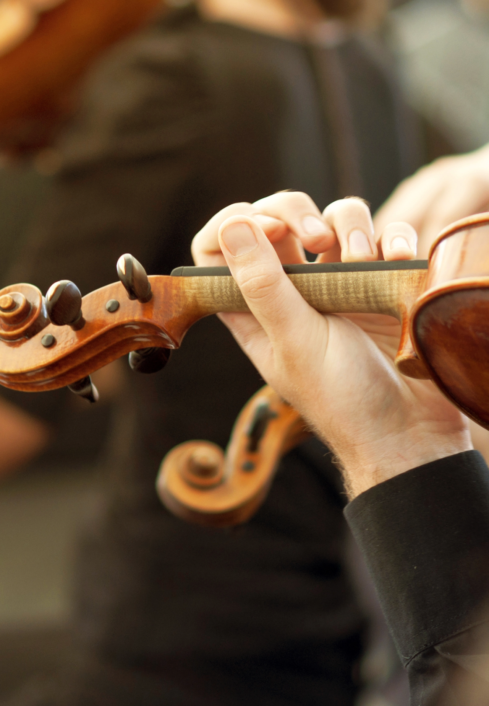
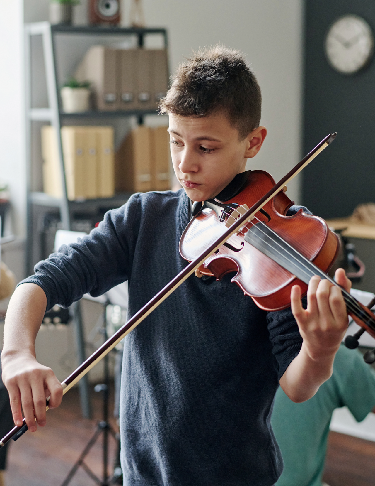

⭐⭐⭐⭐⭐
"Mila’s violin performance made our wedding ceremony absolutely magical. As I walked down the aisle, the music created such an emotional atmosphere that many of our guests were in tears. It was one of the most beautiful moments of our lives."
Every performance tells a story. From weddings and private celebrations to violin lessons and community events, Mila’s music has helped create unforgettable memories for many families and audiences.
⭐⭐⭐⭐⭐
"Mila’s violin performance made our wedding ceremony absolutely magical. As I walked down the aisle, the music created such an emotional atmosphere that many of our guests were in tears. It was one of the most beautiful moments of our lives."
⭐⭐⭐⭐⭐
"We hired Mila for a corporate reception and she completely transformed the atmosphere of the evening. The elegant sound of her violin created the perfect background for conversation and networking."
⭐⭐⭐⭐⭐
"For our parents’ 40th anniversary celebration, Mila’s performance was the highlight of the evening. Her music was beautiful, emotional, and perfectly suited to the moment."

⭐⭐⭐⭐⭐
"Learning violin with Mila has been an incredible experience. Her patience and teaching style helped me improve quickly and gain confidence performing."
⭐⭐⭐⭐⭐
"My son began violin lessons with Mila and quickly developed a love for music. Mila is an inspiring teacher who truly cares about her students."
Mila recently performed at a breathtaking oceanfront wedding ceremony where her violin music accompanied the bride’s entrance and created a romantic atmosphere for the entire celebration.
An intimate evening performance in a candlelit garden where Mila performed a curated selection of classical and contemporary violin pieces.
Mila participated in a local cultural celebration performing traditional and classical violin pieces that delighted the audience.

Every event deserves music that reflects its beauty and emotion. Whether you’re planning a wedding, celebration, or looking for violin lessons, Mila’s performances bring elegance and artistry to every occasion.
Contact Mila